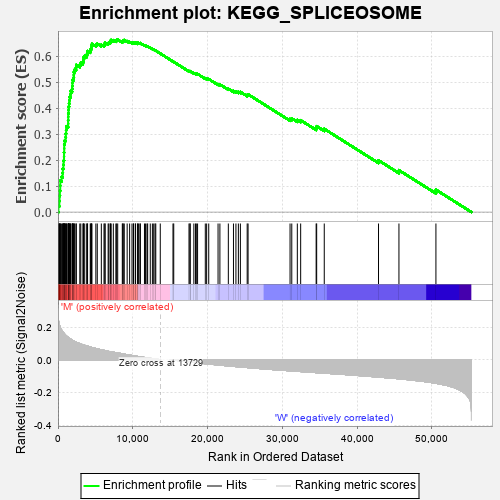
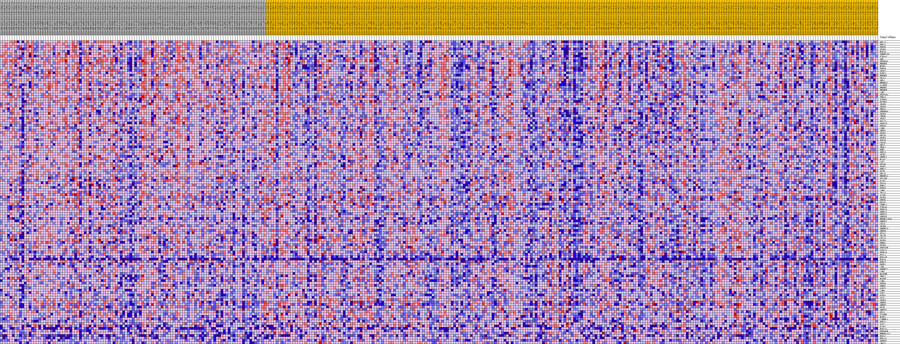
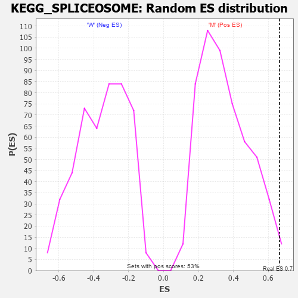

| Dataset | MUC16.MUC16.cls#M_versus_W.MUC16.cls#M_versus_W_repos |
| Phenotype | MUC16.cls#M_versus_W_repos |
| Upregulated in class | M |
| GeneSet | KEGG_SPLICEOSOME |
| Enrichment Score (ES) | 0.66360384 |
| Normalized Enrichment Score (NES) | 1.8864592 |
| Nominal p-value | 0.011299435 |
| FDR q-value | 0.04219234 |
| FWER p-Value | 0.173 |

| PROBE | DESCRIPTION (from dataset) | GENE SYMBOL | GENE_TITLE | RANK IN GENE LIST | RANK METRIC SCORE | RUNNING ES | CORE ENRICHMENT | |
|---|---|---|---|---|---|---|---|---|
| 1 | DHX15 | na | 64 | 0.242 | 0.0231 | Yes | ||
| 2 | WBP11 | na | 179 | 0.213 | 0.0424 | Yes | ||
| 3 | PRPF8 | na | 208 | 0.209 | 0.0627 | Yes | ||
| 4 | SF3B3 | na | 250 | 0.203 | 0.0824 | Yes | ||
| 5 | HSPA8 | na | 300 | 0.196 | 0.1012 | Yes | ||
| 6 | SNRNP200 | na | 307 | 0.196 | 0.1207 | Yes | ||
| 7 | EIF4A3 | na | 482 | 0.181 | 0.1356 | Yes | ||
| 8 | AQR | na | 620 | 0.172 | 0.1504 | Yes | ||
| 9 | PRPF40A | na | 643 | 0.170 | 0.1670 | Yes | ||
| 10 | HNRNPU | na | 726 | 0.165 | 0.1821 | Yes | ||
| 11 | NCBP1 | na | 748 | 0.164 | 0.1981 | Yes | ||
| 12 | PRPF4 | na | 806 | 0.160 | 0.2131 | Yes | ||
| 13 | SRSF1 | na | 809 | 0.160 | 0.2291 | Yes | ||
| 14 | PCBP1 | na | 834 | 0.158 | 0.2446 | Yes | ||
| 15 | HNRNPK | na | 836 | 0.158 | 0.2604 | Yes | ||
| 16 | SF3A1 | na | 885 | 0.156 | 0.2751 | Yes | ||
| 17 | SNW1 | na | 1018 | 0.149 | 0.2877 | Yes | ||
| 18 | HNRNPA1 | na | 1044 | 0.148 | 0.3021 | Yes | ||
| 19 | ALYREF | na | 1093 | 0.147 | 0.3159 | Yes | ||
| 20 | HNRNPC | na | 1130 | 0.145 | 0.3298 | Yes | ||
| 21 | HNRNPM | na | 1354 | 0.136 | 0.3393 | Yes | ||
| 22 | LSM2 | na | 1358 | 0.136 | 0.3529 | Yes | ||
| 23 | PRPF38A | na | 1369 | 0.135 | 0.3662 | Yes | ||
| 24 | THOC3 | na | 1373 | 0.135 | 0.3797 | Yes | ||
| 25 | TCERG1 | na | 1409 | 0.134 | 0.3925 | Yes | ||
| 26 | EFTUD2 | na | 1417 | 0.134 | 0.4058 | Yes | ||
| 27 | SRSF8 | na | 1484 | 0.132 | 0.4178 | Yes | ||
| 28 | SRSF4 | na | 1524 | 0.131 | 0.4302 | Yes | ||
| 29 | PHF5A | na | 1550 | 0.130 | 0.4428 | Yes | ||
| 30 | SNRNP40 | na | 1674 | 0.126 | 0.4532 | Yes | ||
| 31 | SRSF9 | na | 1688 | 0.126 | 0.4655 | Yes | ||
| 32 | CHERP | na | 1882 | 0.120 | 0.4740 | Yes | ||
| 33 | SRSF7 | na | 1916 | 0.119 | 0.4853 | Yes | ||
| 34 | DDX23 | na | 1931 | 0.118 | 0.4969 | Yes | ||
| 35 | SRSF10 | na | 1936 | 0.118 | 0.5086 | Yes | ||
| 36 | PUF60 | na | 2084 | 0.114 | 0.5174 | Yes | ||
| 37 | LSM6 | na | 2116 | 0.114 | 0.5282 | Yes | ||
| 38 | SNRPA | na | 2123 | 0.114 | 0.5395 | Yes | ||
| 39 | SF3B1 | na | 2229 | 0.111 | 0.5487 | Yes | ||
| 40 | DHX38 | na | 2411 | 0.107 | 0.5562 | Yes | ||
| 41 | SRSF3 | na | 2443 | 0.107 | 0.5663 | Yes | ||
| 42 | USP39 | na | 2917 | 0.098 | 0.5675 | Yes | ||
| 43 | CDC40 | na | 3048 | 0.095 | 0.5747 | Yes | ||
| 44 | DHX8 | na | 3336 | 0.091 | 0.5786 | Yes | ||
| 45 | THOC1 | na | 3397 | 0.090 | 0.5866 | Yes | ||
| 46 | RBMX | na | 3411 | 0.090 | 0.5954 | Yes | ||
| 47 | SNU13 | na | 3570 | 0.088 | 0.6013 | Yes | ||
| 48 | SF3B2 | na | 3847 | 0.084 | 0.6047 | Yes | ||
| 49 | SMNDC1 | na | 3900 | 0.083 | 0.6121 | Yes | ||
| 50 | BCAS2 | na | 3952 | 0.083 | 0.6195 | Yes | ||
| 51 | XAB2 | na | 4313 | 0.078 | 0.6207 | Yes | ||
| 52 | DDX46 | na | 4369 | 0.077 | 0.6274 | Yes | ||
| 53 | SRSF2 | na | 4473 | 0.076 | 0.6331 | Yes | ||
| 54 | RBM22 | na | 4480 | 0.076 | 0.6406 | Yes | ||
| 55 | PPIH | na | 4539 | 0.075 | 0.6470 | Yes | ||
| 56 | DHX16 | na | 5062 | 0.069 | 0.6444 | Yes | ||
| 57 | HNRNPA3 | na | 5251 | 0.066 | 0.6477 | Yes | ||
| 58 | DDX39B | na | 5793 | 0.061 | 0.6440 | Yes | ||
| 59 | U2AF2 | na | 6151 | 0.057 | 0.6432 | Yes | ||
| 60 | SF3A3 | na | 6277 | 0.056 | 0.6466 | Yes | ||
| 61 | RBM17 | na | 6289 | 0.056 | 0.6519 | Yes | ||
| 62 | PRPF3 | na | 6704 | 0.052 | 0.6496 | Yes | ||
| 63 | LSM4 | na | 6798 | 0.051 | 0.6530 | Yes | ||
| 64 | TRA2A | na | 6998 | 0.049 | 0.6543 | Yes | ||
| 65 | ACIN1 | na | 7005 | 0.049 | 0.6591 | Yes | ||
| 66 | SF3B6 | na | 7109 | 0.048 | 0.6621 | Yes | ||
| 67 | SNRPG | na | 7398 | 0.046 | 0.6614 | Yes | ||
| 68 | DDX42 | na | 7738 | 0.043 | 0.6596 | Yes | ||
| 69 | CRNKL1 | na | 7841 | 0.042 | 0.6620 | Yes | ||
| 70 | TXNL4A | na | 7982 | 0.041 | 0.6636 | Yes | ||
| 71 | PRPF18 | na | 8597 | 0.036 | 0.6561 | No | ||
| 72 | SNRPA1 | na | 8671 | 0.035 | 0.6583 | No | ||
| 73 | PRPF31 | na | 8717 | 0.035 | 0.6610 | No | ||
| 74 | SNRPD3 | na | 8858 | 0.034 | 0.6619 | No | ||
| 75 | HNRNPA1P60 | na | 9247 | 0.031 | 0.6579 | No | ||
| 76 | SNRPD1 | na | 9578 | 0.028 | 0.6548 | No | ||
| 77 | CDC5L | na | 9893 | 0.026 | 0.6516 | No | ||
| 78 | SF3B4 | na | 10077 | 0.024 | 0.6507 | No | ||
| 79 | SNRNP70 | na | 10105 | 0.024 | 0.6526 | No | ||
| 80 | SNRPB | na | 10335 | 0.022 | 0.6507 | No | ||
| 81 | SF3A2 | na | 10374 | 0.022 | 0.6522 | No | ||
| 82 | TRA2B | na | 10643 | 0.020 | 0.6494 | No | ||
| 83 | CWC15 | na | 10668 | 0.020 | 0.6509 | No | ||
| 84 | SRSF6 | na | 10783 | 0.019 | 0.6508 | No | ||
| 85 | RBM8A | na | 10961 | 0.018 | 0.6494 | No | ||
| 86 | SF3B5 | na | 11015 | 0.018 | 0.6502 | No | ||
| 87 | PRPF38B | na | 11562 | 0.014 | 0.6417 | No | ||
| 88 | CCDC12 | na | 11707 | 0.013 | 0.6404 | No | ||
| 89 | PRPF19 | na | 11893 | 0.012 | 0.6382 | No | ||
| 90 | PPIL1 | na | 11987 | 0.011 | 0.6376 | No | ||
| 91 | HSPA1B | na | 12337 | 0.009 | 0.6322 | No | ||
| 92 | HSPA6 | na | 12620 | 0.007 | 0.6277 | No | ||
| 93 | RBM25 | na | 12799 | 0.006 | 0.6251 | No | ||
| 94 | PQBP1 | na | 12973 | 0.005 | 0.6224 | No | ||
| 95 | LSM7 | na | 13073 | 0.004 | 0.6210 | No | ||
| 96 | SNRNP27 | na | 13674 | 0.000 | 0.6101 | No | ||
| 97 | LSM3 | na | 15375 | -0.002 | 0.5795 | No | ||
| 98 | MAGOHB | na | 15475 | -0.002 | 0.5779 | No | ||
| 99 | THOC2 | na | 17516 | -0.013 | 0.5422 | No | ||
| 100 | MAGOH | na | 17658 | -0.014 | 0.5410 | No | ||
| 101 | LSM5 | na | 17660 | -0.014 | 0.5424 | No | ||
| 102 | PRPF6 | na | 18165 | -0.016 | 0.5349 | No | ||
| 103 | SNRPC | na | 18391 | -0.018 | 0.5326 | No | ||
| 104 | SART1 | na | 18491 | -0.018 | 0.5326 | No | ||
| 105 | LSM8 | na | 18663 | -0.019 | 0.5314 | No | ||
| 106 | SYF2 | na | 19695 | -0.024 | 0.5151 | No | ||
| 107 | PLRG1 | na | 19874 | -0.025 | 0.5143 | No | ||
| 108 | ISY1 | na | 20154 | -0.026 | 0.5118 | No | ||
| 109 | SRSF5 | na | 21400 | -0.032 | 0.4924 | No | ||
| 110 | SNRPE | na | 21647 | -0.033 | 0.4912 | No | ||
| 111 | SNRPF | na | 22775 | -0.037 | 0.4745 | No | ||
| 112 | PPIE | na | 23462 | -0.040 | 0.4661 | No | ||
| 113 | SNRPD2 | na | 23791 | -0.041 | 0.4643 | No | ||
| 114 | DDX5 | na | 24117 | -0.043 | 0.4627 | No | ||
| 115 | U2SURP | na | 24386 | -0.044 | 0.4622 | No | ||
| 116 | NCBP2 | na | 25295 | -0.047 | 0.4505 | No | ||
| 117 | CTNNBL1 | na | 25414 | -0.048 | 0.4531 | No | ||
| 118 | BUD31 | na | 31027 | -0.067 | 0.3581 | No | ||
| 119 | SLU7 | na | 31258 | -0.068 | 0.3607 | No | ||
| 120 | U2AF1 | na | 32000 | -0.070 | 0.3543 | No | ||
| 121 | HSPA1A | na | 32447 | -0.072 | 0.3534 | No | ||
| 122 | PRPF40B | na | 34516 | -0.078 | 0.3237 | No | ||
| 123 | HNRNPA1L2 | na | 34587 | -0.078 | 0.3303 | No | ||
| 124 | HSPA2 | na | 35601 | -0.081 | 0.3201 | No | ||
| 125 | HSPA1L | na | 42856 | -0.106 | 0.1991 | No | ||
| 126 | SNRPB2 | na | 45587 | -0.116 | 0.1612 | No | ||
| 127 | ZMAT2 | na | 50532 | -0.143 | 0.0859 | No |

